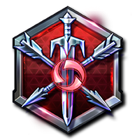

전사
선봉과 후방의 적임자
전사는 자신을 치유하는 능력이나 피해를 감소시키는 능력으로 대량의 피해를 견뎌내고, 적당한 공격 능력도 지닙니다. 전사는 이동 불가, 기절, 끌어당기기 등의 효과로 적을 괴롭히고 팀 전투 상황에서 전투의 선봉에 섭니다.
암살자
죽음 인도자
암살자는 단일 또는 다수의 대상에게 특화된 여러 기술로 막대한 피해를 주지만, 그만큼 몸이 약합니다. 그들은 치고 빠지기, 신중하게 계산된 공격, 교전이나 탈출을 위한 완벽한 순간 포착 등을 전제로 전장에서 활약을 펼칩니다.
지원가
꿋꿋하고 꾸준한 동료
지원가 영웅들은 강력한 치유 능력과 강화 효과로 상황을 유리하게 만들고, 이동 불가 및 기절 효과로 적을 괴롭힙니다. 지원가는 아군 전술의 핵심인 만큼 항상 동료를 살피거나 신속하게 합류해야 합니다.
전문가
난전과 파괴의 달인
다양한 기술로 게임의 흐름을 바꾸는 전문가 영웅들은 공격로를 장악하고, 혼자 용병 캠프를 차지하고, 졸개를 소환하고, 신속하게 전장에 복귀하며, 구조물의 공격을 유도하거나 무력화시켜 아군이 쉽게 철거할 수 있게 돕습니다.